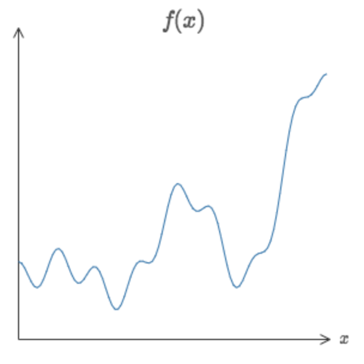
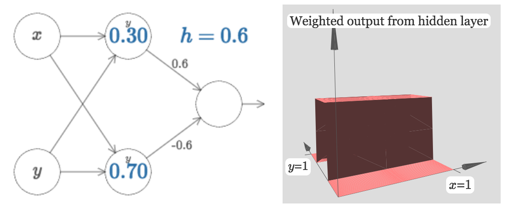
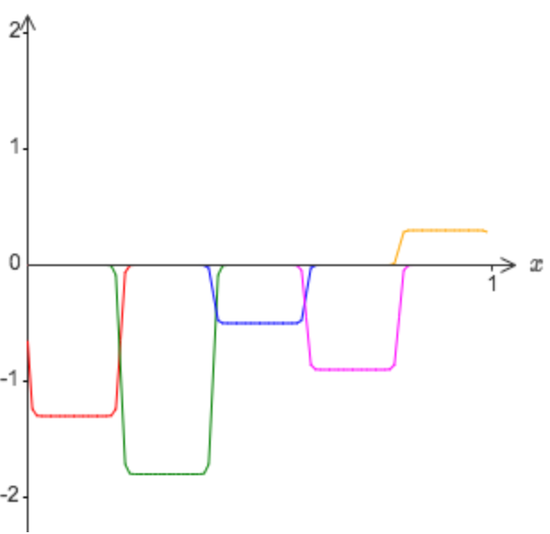

神经网络最令人激动的一个性质，就是它可以实现任意功能的函数。而且是即使对于只有一个隐藏层的神经网络，这个结论依然成立。
大部分神经网络的使用者都知道这个性质，但是并不理解为什么神经网络会有这样的性质。而其理论证明对于非数学专业的同学来说并不好理解，所以本章旨在用直观的方式帮助大家理解这个性质。
一. 两个前提
神经网络可以计算任意函数其实是有前提的。
首先要明白的是它并不是可以完全准确的计算原函数的值，但是通过增加隐藏层神经元的值我们可以越来越逼近原函数。就是说对于一个需要实现的函数\(f(x)\)，要求实现精度为\(\epsilon > 0\)，也就是需要足够的隐藏层神经元使得神经网络输出\(g(x)\)满足\(|g(x) - f(x)| < \epsilon\)对所有输入\(x\)。
第二个前提是被模拟的函数是连续函数，不过有的时候对于非连续函数，神经网络得到的连续近似已经足够满足要求了。
二. 单输入单输出的情况
先考虑最基础的单输入单输出的函数情况。为了理解怎么利用神经网络去计算给定函数\(f\)，我们先考虑只有一个隐藏层的情况，其中含有两个神经元。
考虑隐藏层第一个神经元，其输出由\(\sigma (wx+b)\)决定。改变其参数\(w\)和\(b\)可以发现如下规律：
- 改变b不会使函数形状发生改变，只会使其左右偏移。因为\(f(x) = \frac{1}{1+e^{wx+b+b_0}} = \frac{1}{e^{w(x+\frac{b_0}{w}) + b}}\)，\(b_0>0\)时即\(b\)增大时，相当于图像向左移动，\(b_0<0\)时即\(b\)减小时，相当于图像向右移动。
- 改变w则会改变函数的形状，因为\(f(x) = \frac{1}{1+e^{(w+w_0)x+b}} = \frac{1}{1+e^{wx\frac{w+w_0}{w} + b}}\)，相当于在横轴上进行了放缩。当\(|w|\)(\(w<0\)的时候，函数会在x轴上反转，不过不影响我们理解)变的越来越大的时候，函数就会变的越来越陡峭。实际中观察，当\(w=100\)左右时，函数的陡峭程度已经接近于阶跃函数了。
继续增大\(w\)的值使得其输出更加接近阶跃函数：
当我们对隐藏层的神经元的输出进行加权求和的时候，分析阶跃函数要比分析sigmoid函数容易。我们很容易可以知道两个阶跃函数的和是什么形式，但是对于两个sigmoid函数就没有这么容易得到。所以我们先假设这些神经元输出函数就是阶跃函数，当然这也是一种近似，我们随后再看这和真正的情况相比会有什么影响。
再考虑另外一个问题，我们知道标准的\(\sigma (z)\)的中点在\(z=0\)处，当它近似为一个阶跃函数的时候，阶跃点在哪呢？容易知道就是在\(wx+b = 0\)处，即\(s = -\frac{b}{w}\)。于是对于已经近似被认为是阶跃函数的神经元就可以只用一个参数\(s = -\frac{b}{w}\)来代替之前的两个参数\(w\)和\(b\)。
接着再来考虑整个神经网络的情况。

右边展示的是加权输出的结果\(w_1 a_1 + w_2 a_2\)，其中\(a_1\)和\(a_2\)分别是隐藏层两个神经元的输出。不过注意到这里神经网络最终的输出为\(\sigma (w_1 a_1 + w_2 a_2 +b)\)。
通过调节这些参数可以观察到：
- 调节\(s_1\)的大小\(s_2\)分别控制上下两个神经元的激活前后顺序。例如\(s_1<s_2\)的情况下，右边函数的第一个阶梯由第一个神经元输出决定，因为它先被激活，第二个阶梯才是两者之和
- 调节\(w_1\)和\(w_2\)分别控制两个神经元输出在输出神经元的权重，当其中一个为0时，只剩下一个输入，右边的函数也显示为只有一个阶跃函数。
最后，试着让\(w_1 = 0.8, w_2 = -0.8\)，然后\(s_1 = 0.4, s_2 = 0.6\)就得到一个在(0.4, 0.6)上的门函数：
如果我们固定\(s_1\)和\(s_2\)，然后\(w_1 = -w_2\)，这样就可以将门函数看作是只有一个参数\(h\)的模型，其中\(h = w_1\)，对应着就是门函数的“门梁”的位置。
通过组合神经元我们就可以轻易得到两个门函数组合的情况：
同样的方法，我们可以构造任意数量任意高度的门函数。因为对于[0,1]这个区间的划分是可以有无限多N个的，只要使用N对隐藏层神经元就，然后分别配上对应的\(h\)就可以达到要求了。
上图就是一个五个宽度一样的门函数的情形，高度由各自的参数\(h\)决定。但是仅仅这样就能说明神经网络可以计算任意函数吗？看下面这个例子：

这个函数来自：
看上去这个函数形式和神经网络完全没什么联系，接下来就来看看神经网络是怎么去近似计算它的。
前面提到过\(w_1 a_1 + w_2 a_2 + ...\)并不是神经网络最终输出，最终输出为\(\sigma (\sum_j w_j a_j + b)\)，那么为了让最终输出为需要的函数\(f(x)\)，就要求\(\sigma\)函数的输入为\(\sigma^{-1} (f(x))\)，即隐藏层输出的加权和为\(\sigma^{-1} (f(x))\)，其中\(\sigma^{-1}\)为\(\sigma\)的反函数。
于是只要有方法可以让隐藏层输出和近似等于上面反函数，就相当于神经网络的最终输出近似等于\(f(x)\)了。对于上面五个门函数的情形，通过调节各自的\(h\)得到符号近似要求的结果：
这虽然只是一个粗略的近似，结果也不唯一，但是只要通过增加门函数的个数，即增加隐藏层神经元的个数，就可以让结果越来越精确。将这个得到的模型转换到我们的神经网络参数上，隐藏层的\(w\)取了很大的数\(w=1000\)，由于\(s=-\frac{b}{w}=0.2\)，得到\(b = -1000*0.2=-200\)。
输出层的权重由\(h\)决定，例如第一个\(h=-1.3\)，说明它代表的两个权重分别为-1.3和1.3，以此类推，输出层的bias这里被设置为0。
这样就完成了通过构造一个神经网络来逼近目标函数的目的了，而且通过增加隐藏层神经元的个数可以使得这个近似结果更加准确。事实上，我们的目标函数\(f(x)=0.2+0.4x^2+0.3sin(15x)+0.05cos(50x)\)的形式无关紧要，本质上我们使用一个单层神经网络构建了一个lookup表，不同区间对应不同的值，区间分的越细小，就越准确。
三. 一般情形：多输入多输出情况
先考虑两个输入的情况：
我们将\(x\)和\(y\)看作是变量，其加权输出和为因变量，这样就将之前的平面图像转变为了3d图像，不妨先设\(w_2 = 0\)，这样图像为：
可以看到平行于x轴的任意截面都是之前看到的平面上的曲线形式。同样的原理，改变\(w_1\)和\(b\)分别改变曲线的形状和位置。同样将\(w_1\)设定为一个很大的数，曲线转变为阶跃函数，位置为\(s_x = -\frac{b}{w_1}\)：
这里对应着\(w_1 = 1000, w_2 = 0\)。同样可以设定\(w_2 = 1000, w_1 = 0\)这样就成了平行于y轴的曲线：
接着通过组合，我们得到了对应门函数的一个3d情况：
注意这里的y并没有起到作用，和y相连的权重都被设置成了0。类似也有只有y的版本，将和x的相连的权重设置为0:

如果我们将这两个方向垂直的门函数相加呢：
改变\(h\)的大小可以改变图像的高度，很容易可以知道中间最高的地方是边上的两倍高。我们于是想到能否用中间的高度作为中间区间上的值，这种方法去将定义域分割成一个个区间呢，然后每个区间对应一个值，区间分的越细就越逼近原函数。类似于之前单输入的情况，这次是一个二维的lookup表。
但是这就需要我们得到的是一个下图类似的塔函数：
但是我们得到的情况是除了中间是高的（\(2h\)），边上并不是平的，也有一定的高度（\(h\)），并不满足塔函数的条件。怎么将其转变为塔函数的形状呢？注意到，这里只是隐藏层的加权输出和，并不是输出神经元的输出，也就是说还有一个\(\sigma\)函数的作用没有考虑，就可以尝试调节输出神经元的bias\(b\)来进行调节。
考虑门函数的输出值由\(h\)决定，我们可以得到神经网络的输出值（不再是隐藏层的输出了）中间区域的值近似为\(f_{max} = \frac{1}{1+e^{-(2h+b)}}\)，边上区域的值近似为\(f_{min} = \frac{1}{1+e^{-(h+b)}}\)。我们想要\(f_{max}\)能够近似等于需要的值\(g\)，这种情况下得到条件一：\(2h+b=c\)，其中\(c\)为一个常数。又为了让\(f_{min} \approx 0\)，就需要条件二：\(h+b<<0\)。这样就可以通过调节\(h\)与\(b\)的值使得这两个条件都成立，因为只要\(h\)足够大，\(h+b = c - h\)就会足够小。不妨选择\(h=10, b \approx -\frac{3h}{2}\)，得到：
注意到这里的图像是输出神经元的输出，也就是经过\(\sigma\)函数后的结果。可以看到，这已经得到了一个形式不错的塔函数了，继续增加\(h\)的值，调节\(b=-\frac{3h}{2}\)，效果会更加明显。
接着我们将两个类似这样的神经网络组合去得到两个塔函数：
每个塔函数对应着第二个隐藏层的每个神经元的输出，调节两个\(w\)的值可以分别调节其高度。同样的方式我们可以得到任意多个自定义高度的塔函数，每个塔函数对应2维平面上的一个区域，通过这样的2维lookup就可以使得第二个隐藏层的加权输出可以近似等价于任意关于两个变量的函数\(f(x,y)\)。
但是这毕竟不是输出层的输出，于是类似的方法我们使用\(\sigma\)函数的反函数，让第二个隐藏层加权输出等价于\(\sigma^{-1} (f(x,y))\)即可。
如果输入变量个数多余两个呢？
先看一下三个变量的情况\(x_1, x_2, x_3\)。类似于上面的情况，下面这个神经网络可以得到一个四维空间上的塔函数：
这里\(x_1,x_2,x_3\)为神经网络的输入，\(s_1,t_1,s_2,t_2\)都是控制门函数的位置，其中第一层隐藏层的权重已经足够大了使得它们各自的输出为阶跃函数，然后各自的偏差由\(b=-sw\)得到。然后第二层隐藏层的权重全部为\(h\)和\(-h\)，然后不妨令其bias为\(-\frac{5h}{2}\)，验证仍然满足之前构造塔函数的条件\(h+b = -\frac{3h}{2} << 0\)和\(3h+b = \frac{h}{2} = c\)(c为一常数)。
随着增大\(h\)到一定程度，这个神经网络于是就相当于对于3维上一块区域\(x_1 \in (s_1,t_1), x_2 \in (s_2, t_2), x_3 \in (s_3, t_3)\)，其值为1，其他任意位置为0的塔函数。
通过组合这样的神经网络就可以将多个塔函数相组合就可以近似替代任意三个变量的函数。同样的想法可以拓展到\(m\)维空间，只要记得将进行组合处的神经元bias设置为\((-m+\frac{1}{2})h\)使得函数形式为中间凸起，旁边为0。
这样就得到了使用神经网络逼近任意输出为一维的函数的方法了。但是神经网络的输出经常是多维的\(f(x_1, ..., x_m) \in R^n\)，例如前面的MNIST问题时输出为10维，这种情况怎么处理呢？
这种情况可以看作是\(n\)个独立的函数：\(f^1 (x_1, ..., x_,m), f^2 (x_1, ..., x_m)\)，我们分别设计神经网络近似表示\(f_1, f_2\)等等，然后简单的将它们组合即可。
拓展：
上面介绍了如何用两个隐藏层的神经网络去近似表示函数，能否证明只需要一层隐藏层就可以完成这样的设计？试着在两个输入的情况下，依次证明：(a)除了x轴，y轴以外，可以构造任意方向的阶跃函数；(b)通过将大量的(a)中的函数叠加，可以得到一个底面形状不再是长方形而是圆形的塔函数；(c)使用这些圆形的塔函数，可以近似表示任意函数。
(a)：
先看一下之前得到的方向为什么是x轴，y轴，或者说这些方向是由什么决定的。\(\frac{1}{1+e^{-(w_1 x+ w_2 y +b)}}\)，之前选择w_2为0时，得到的阶跃函数时x轴方向的，可以发现阶跃函数的方向是和直线\(w_1 x+ w_2 y +b = 0\)垂直的方向。所以说只要根据需要的方向构造与该方向垂直的直线\(w_1 x + w_2 y + b = 0\)中的\(w_1\)和\(w_2\)即可，也就是说现在的阶跃函数的构造不仅仅依靠一个输入神经元，而是两个都需要。
(b):
两个长方形垂直相交的重叠部分是方形，如果三个，四个呢？这个也许不好想象，但是换一个思路，对一个长方形绕着其中心旋转，中间不变的部分就是以中心为圆心的内切圆，所以只要组合足够多不同方向的(a)中阶跃函数，就可以得到近似圆形底面的塔函数。
(c)：
长方形区域很容易可以拼成一块大的区域，但是圆形却不行，它们之间总是有缝隙的。可以通过本文后面部分介绍的方法，将这些未覆盖的部分当成是“失败区域”，使用函数近似表示原函数的\(\frac{1}{M}\)，每次移动\(\frac{1}{M}\)单位个步长，最后叠加就得到覆盖满所有区域的目标函数。
这里按照作者给出的提示解答完了这三步，但是我还是不大清楚这和能用一个隐藏层有什么联系，因为圆形的塔函数依然面临之前的一个问题，就是除了中间高的区域外，还存在边上的不为0的区域，还是要依靠一个神经元将其转变为真正的塔的形式，中间凸出，边缘为0。我理解的一个隐藏层可以解决的原因是类似于在进行傅立叶级数展开的时候，我们将函数表示成一组三角函数基函数的线性叠加。其实任意连续函数都可以看作为一组基函数的叠加，然后在一个隐藏层选择合适的基函数叠加即可。
四. 使用sigmoid以外的神经元
前面已经证明了以sigmoid神经元为基础的神经网络可以计算任意函数。回忆一下sigmoid函数的形式，对于输入\(z=\sum_j w_j x_j +b\)，\(\sigma(z)\)的形式为：
如果将其换成一个不一样的激活函数\(s(z)\):
会出现什么情况呢？
同样得方法，我们用这个函数也可以得到阶跃函数。试着增大\(w=100\)：
类似于sigmoid函数的情况，新的激活函数一样会收缩，随着\(w\)的继续增大，它最终也会成为一个阶跃函数的近似表示。然后通过改变\(b\)的值就能实现对该阶跃函数的移动。使用之前一样的方法就可以构造神经网络近似表示所需的目标函数。
那么是不是所有的激活函数\(s(z)\)都满足这样的要求可以得到阶跃函数呢？事实上只需要\(s(z)\)在\(z\rightarrow -\infty\)和\(z \rightarrow \infty\)时极限存在，并且这两个极限的值不相等即可。相等的话就不是阶跃了，而是一个“平”的常量函数了。激活函数满足这些性质之后，神经网络就可以逼近任意函数了。
拓展：
拓展一：
证明之前介绍的RELU神经元不满足上述的条件，但是RELU函数一样可以构造上述神经网络近似表示任意函数。
答案：
RELU在\(x>0\)时是一个线性增长的函数，当\(x\rightarrow \infty\)时，\(RELU(x) \rightarrow \infty\)，极限值并不存在，所以不满足要求。
虽然一个RELU函数按照之前改变参数的方法怎么也变不成阶跃函数，但是可以通过两个RELU函数相叠加得到。对于\(y=wx\)和\(y=-wx+b(k>0)\)，后者相对前者向右移动了\(\frac{b}{w}\)，于是两者相加得到了一个分段函数
通过增大\(w\)就可以减小\(\frac{b}{w}\)从而让这个分段函数中间增长的部分变的更窄，使之近似为阶跃函数。
拓展二：
考虑激活函数为线性函数\(s(z)=z\)的神经元，证明该函数不满足上述条件，也无法构造上述神经网络近似表示任意函数。
答案：
这个函数在\(x\rightarrow \infty\)和\(x \rightarrow -\infty\)处的极限都不存在，显然不满足上面的条件。
线性函数自身不具有这样的性质，线性函数的线性组合还是连续的线性函数，依然是无法满足阶跃函数的要求的。
五. 修正阶跃函数
之前已经证明了我们通过对神经元进行组合得到近似的阶跃函数，但这始终是近似表示，其中还存在一段函数并非阶跃函数的“失败区域”：
虽然通过增大wegiths，可以使得这块区域越来越窄，也就是说与阶跃函数的差别越来越小。不过还有其他的处理这个问题的方法的话当然就更好了。
事实上，这个问题并不难解决。设想对于一个一维函数\(f(x)\)，按照之前的方法，我们需要隐藏层的输出可以表示成：
按照之前的方法，我们使用一系列的门函数去表示这个函数：

可以看到，只要门函数足够多，门的宽度足够窄就可以使得对目标函数的近似表示越好，除了在交界处的“失败区域”。
这次我们不用上面的近似，我们使用目标函数值的一半作为近似对象，\(\sigma ^{-1}(\frac{f(x)}{2})\):
接着使用另外一套隐藏层去近似表示这样的函数：它是上面门函数组成的函数横向平移半个门宽度得到的：
当我们把这两个函数叠加到一起的时候就会得到一个\(\sigma ^{-1}(f(x))\)的近似。这个近似虽然还是会存在“失败区域”，但是比之前的近似已经好多了。这是因为，对于一个点在一个近似函数的“失败区域”时，它将不会出现在另一个近似函数的“失败区域”。
通过减小每次移动的步长为窗口的\(\frac{1}{M}\)，将M个\(\sigma^ {-1}(f(x)/M)\)的近似函数叠加，即得到更好的原始函数的近似表示。
六.总结
这一章描述了神经网络拟合函数的普遍性，但是这当然不是实际中我们使用神经网络计算的方式。不过它让我们知道以后在面对一个问题的时候，不是去怀疑神经网络能不能表示这个函数，而是考虑更重要的事，怎么才能找到一个这个函数的好的近似。
我们的讨论用了两层神经元，不过一层神经元也可以完成这样的工作。那我们为什么还要去用那些层数更多的深度神经网络呢？
理论上这是可能的，不过实际上我们有很多理由相信深度网络更好。在第一章已经讨论过，现实中的问题和知识体系往往是由浅入深的层级关系，而深度网络的层级结构就非常切合这一点。例如对于图像识别的问题，只是着眼于单个像素点的理解当然是不够的，我们更希望它能够识别出更复杂的模式：从简单的线条到复杂的几何形状等等。在随后的章节也会看到，深度网络对于这种层级的问题处理结果的确要好于浅层网络。
总之就是，单层的神经网络就已经可以计算任何函数，但是经验告诉我们，在解决现实问题上，深度网络更加适合。